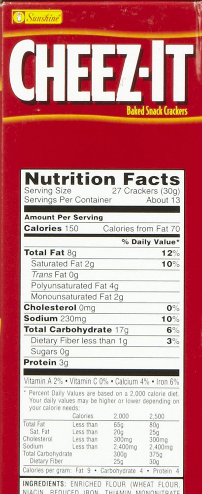
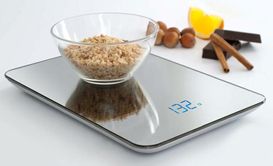

Why a Food Scale is the best Weight Loss tool available!
Dieting is simple, but it can be very hard to successfully accomplish. In order to properly diet, you need to burn some fat. Burning fat involves eating less and choosing the right balance of food to digest per meal. How much less do you need to eat? You can visit our nutrition section to calculate the amount of calories needed to reach your goal.
We know that in order to lose weight, you need to eat less or at a Calorie Deficit. By eating in a Calorie Deficit over time, but just enough calories where your body only burns fat while losing as little muscle as possible. Many people try eating less but give up too quickly when they don’t see results right away.
Weight loss is a marathon, not a sprint. You need to understand that it takes time to burn fat. There are no ways to lose enough weight in a couple days or a week to make a significant change in your appearance. So if you want to lose fat from your belly, cheek, arms, thighs, etc. then keep in mind that you can’t do it in one week.
Why People Don't Lose Weight on a Diet
One big issue we have seen with people in our past experience is that they aren’t measuring how much food they’re eating. Measuring spoons and cups are not very accurate. You can’t be 100% sure if what you have is 1 cup or maybe 2 cups. Yes, you can overestimate but that will lead you to eat less and less over time if you’re doing it for every meal. If you’ve noticed on the Nutrition Label for Serving Size of some food then you’ve probably seen a weight, most likely in Grams (g) or Ounces (Oz).
For example, let’s take a look at this box of Cheez-Its. 1 Serving is 27 crackers or 30 grams. However, if you put 27 crackers into a bowl then how do you really know if it’s 30 grams? It might be a lot more or a bit less.
The Secret Many People Are Missing From Their Weight Loss Diet!
There is one tool people are missing out on their weight loss journey that we feel will make enough of a difference to reach your goals. In order to get an accurate measurement of how much food we are actually putting in our bowl we need to use a Food Scale or Digital Kitchen Scale.
Using Food Scales to measure food for Weight Loss
A food scale allows you to accurately measure how much food you’re eating in various units such as Grams to Ounces.
Furthermore, you can measure how much of each ingredient you’re adding to meals or recipes as well. After you’re done cooking, you will be able to measure how many calories you have in total in a meal. By using MyFitnessPal and a food scale, you can break down a meal into servings and visualize how many calories you will be ingesting in one serving.
One of the most beneficial uses of a digital kitchen scale that we use is to measure the oil that we cook with. This is very important because you can see how much fat you’re actually adding to the meals you’re cooking.
Where to buy a cheap Food Scale or Digital Kitchen Scale?
Food Scales can be found at Target or WalMart. The cheapest one we found in store was around $20. We’ve gone through Amazon and found some decent food scales. There are also some portable scales you can take on the go with you to work or school! Check them out:
Here's a link if you'd like to find more options for food scales:
More Food Scales - Click Here!